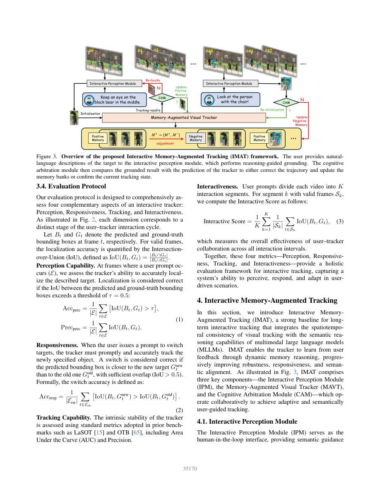
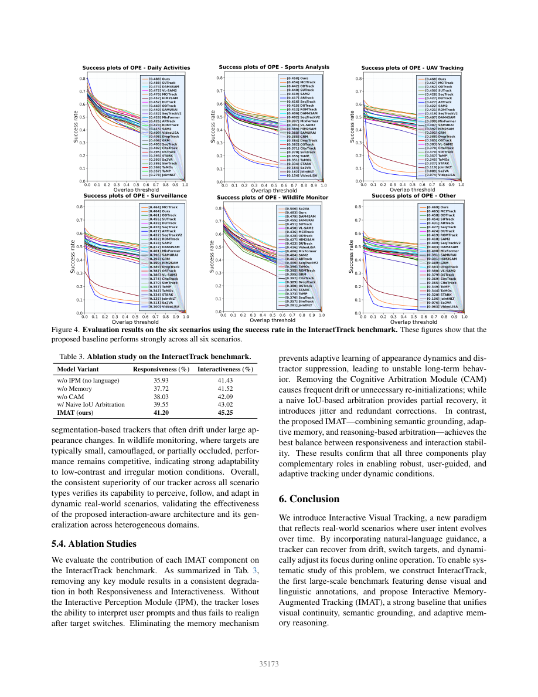

一句话结论
中途纠偏和切换目标值得单独评测，但分段IoU不等于人机协作收益。 InteractTrack提供带时间戳语言的正式任务和IMAT基线；公开评测已实现0.5切换阈值，同时存在提示集合、预测缺失与分母处理的复现边界，尚不能支持减少人工负担或实时体育部署。[2][4]
问题定义
传统首次初始化后固定目标跟踪，不能直接表示用户从持球人切到球、再切到另一球员的意图。本文允许运行中用语言改变目标、纠偏和从整体转局部；篮球示例直接关联体育分析，但输出仍是当前指定目标框，不是全场多目标身份、比赛状态或自动裁判。[2] 与SportsMOT的多目标身份保持是不同任务轴。
方法概述
输入/输出链：当前视频帧与时间戳指令 → Rex-Omni交互感知模块（IPM）定位 → 认知仲裁模块（CAM）比较定位/运动一致性 → 维持或重启SAM2记忆增强跟踪器 → 更新正负记忆 → 后续目标框。[2]（§4、图3）
- 正记忆保存目标外观，负记忆保存干扰、失败预测或已切换目标；CAM根据IoU与中心位移识别漂移，初始化/运行IoU阈值分别为0.3/0.6。[2]
- 仲裁依赖模型输出的一致性，不等于每步有人类真值验证。错误语言定位是否污染记忆、记忆容量与调用预算如何影响收益仍待受控实验。[2]
数据与评测边界
150视频、超过140K帧、超过700条语言描述，六场景含体育；视频来自SportsMOT、LaSOT等既有数据及在线来源。作者重新标注可见区域框、absent状态，并在切换时提供新旧目标；每框至少双人核验、资深者裁决，文本经人工—GPT—人工管线。[2]（§3）[3]（A.1）
- 独立单位应上溯原视频/赛事，不是帧或提示数；重标注不能排除预训练重叠。
- 正文/补充未提供赛事/运动员隔离、原来源split映射、体育子集数量及独立调参集；困难片段经过刻意挑选，不能估计随机比赛平均干预率。[2][3]
- 人工标注质检不是独立用户在线研究；论文没有测量人工秒数、纠偏次数预算、任务完成率或负担。[2][3]
关键发现
| 证据 | 结果与边界 |
|---|---|
| 全集主表2 | IMAT交互分数45.25、响应41.20；Sa2VA为44.81、38.99，分别相差0.44和2.21点；不等于人机效率提升。[2] |
| 体育子集图4 | IMAT AUC0.458，MCITrack0.454；0.4百分点差距没有配对区间/显著性支持。[2] |
| 场景反证 | 野生动物Sa2VA0.500高于IMAT0.483，不能概括为每个场景最佳。[2] |
| 消融表3 | 去IPM、Memory、CAM及简单IoU仲裁均不及完整模型；未隔离正/负记忆与相同定位器调用预算。[2] |
| 真实失效例 | 补充图13快速运动、尺度变化、遮挡杂乱下，更新语言仍丢失目标。[3] |
公平性限制：§5.1给VOT基线每次提示的真值框重初始化，而语言方法输入文本。“同提示时刻”不是“同信息权限”；主表感知/响应计分在重启前后的位置仍需与正式实验代码对齐。[2]
公式与公开实现：哪些疑点已解决，哪些仍在
已解决一项：实现并未遗漏0.5。 正文p.5公式2只比较新旧IoU，但文字要求新目标IoU>0.5。固定代码版本5f149d4001a84c8b83129192057bf6dd820f71b3的tracking/analysis_results.py L149确实含绝对阈值。不能从印刷公式直接断定实验代码放过低IoU切换。[2][4]
仍需冻结的三个分母：[4]
- 响应统计L139–151遍历所有非空描述帧，包括无旧框的提示；缺旧框时只检查当前定位。它不自动等价于公式中的“纯目标切换集合”。
- 交互分数L124–135只平均GT和预测均可解析的帧；零框/缺行可被跳过，缺预测文件的整段序列也跳过。必须同时报完整分母与失败率。
- 感知分母取描述、GT、预测最短长度；预测尾部缺失可让后面的提示退出统计。通用跟踪曲线另有首帧替GT、补零沿用前框等规则，不能与自定义交互路径混为一谈。
真实执行的代码单元反例，不是模型成绩：直接抽取上述固定版本的四个纯函数，构造两帧真值均有效的数据。第一帧正确、第二帧为非零错误框时，交互分数50；把第二帧改零框或删掉该行，分数变100。低于0.5但优于旧目标的框则响应为0，确认阈值有效。六条夹具断言通过，脚本与输出保存在raw。没有重算真实150视频，不能推断论文表2偏差大小或排名改变。[4]
关键图示


局限或疑问
- 没有完整GPU训练成本、端到端FPS、提示时延分布、记忆增长/峰值或模型调用预算；“在线交互”是接口定义，不是已验证实时。[2][3]
- 没有固定人力预算的真实用户实验；模版式时间戳回放不能证明减少工作量。[2][3]
- 代码README的
switch.txt需另取补丁。本次未下载完整数据/权重，也未证明当前代码与论文提交版本完全一致。[4] - 补充含“即将向某方向飞”的提示，需要审计未来信息权限；当前只是风险，不是已证实泄漏。[3]
- DOI待核验；全文依据CVF正式开放版本，arXiv仅由官方链接确认身份，不混用其页码。[1]
对当前 Wiki 判断的影响
topics/sports-ai-video-understanding中的“人机复核”应拆成提示权限、纠偏预算、恢复时延、持续正确率、缺失分母，而不是把交互IoU当协作成功率。研究可比较无干预/固定干预/自适应请求，但要使用相同原视频、定位器和人工预算，并保留失败结果；该建议是基于上述证据的研究设计，不是本文已验证的部署结论。
原始链接与本地材料
- 正式论文页
- 官方正文 · 官方补充
- 作者代码/数据 · 固定审计版本
- 本地证据：
raw/ingest/2026-09-19-interacttrack/；含原始PDF、完整正文/补充文本、analysis.md、代码快照和metric-audit.py/metric-audit-results.json。原始数据文件不公开分发，预览按现有allowlist构建。
相关页面
Sources
[1] https://openaccess.thecvf.com/content/CVPR2026/html/Huang_Interactive_Tracking_A_Human-in-the-Loop_Paradigm_with_Memory-Augmented_Adaptation_CVPR_2026_paper.html
[2] https://openaccess.thecvf.com/content/CVPR2026/papers/Huang_Interactive_Tracking_A_Human-in-the-Loop_Paradigm_with_Memory-Augmented_Adaptation_CVPR_2026_paper.pdf
[3] https://openaccess.thecvf.com/content/CVPR2026/supplemental/Huang_Interactive_Tracking_A_CVPR_2026_supplemental.pdf
[4] https://github.com/NorahGreen/InteractTrack/tree/5f149d4001a84c8b83129192057bf6dd820f71b3